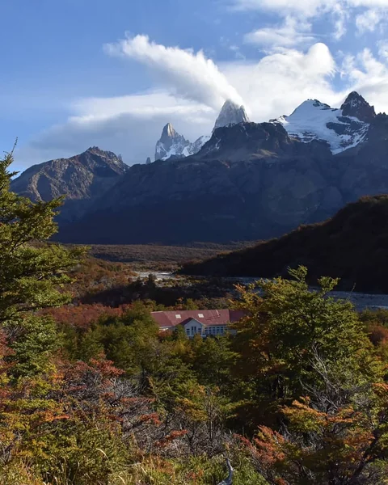
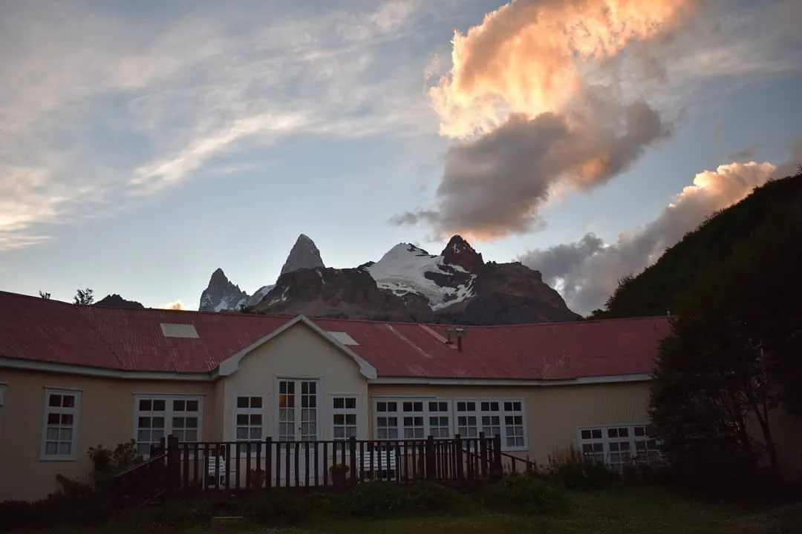
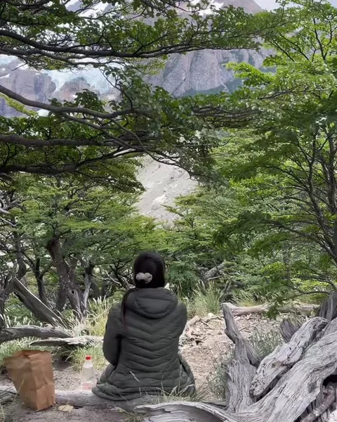
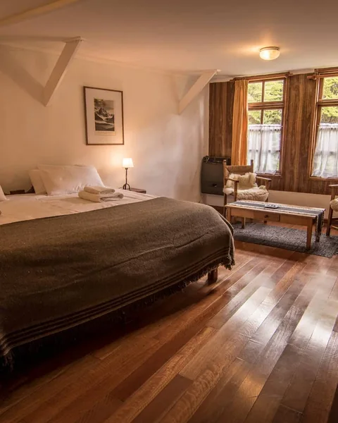
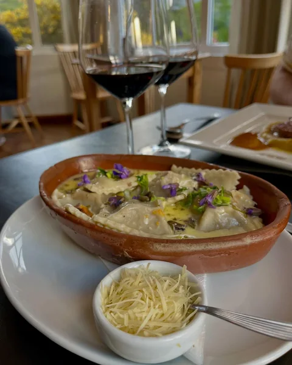
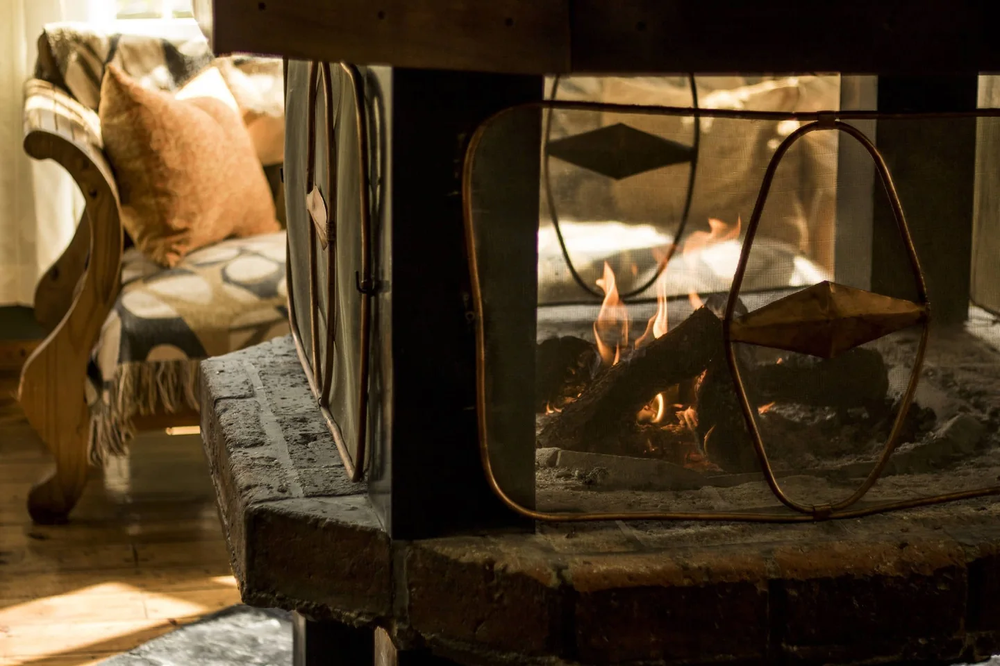
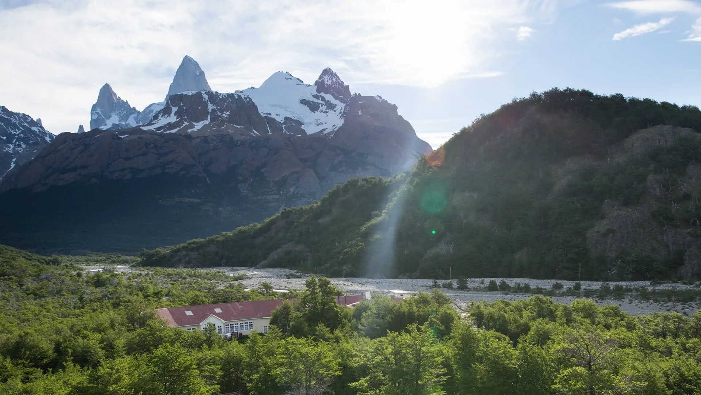
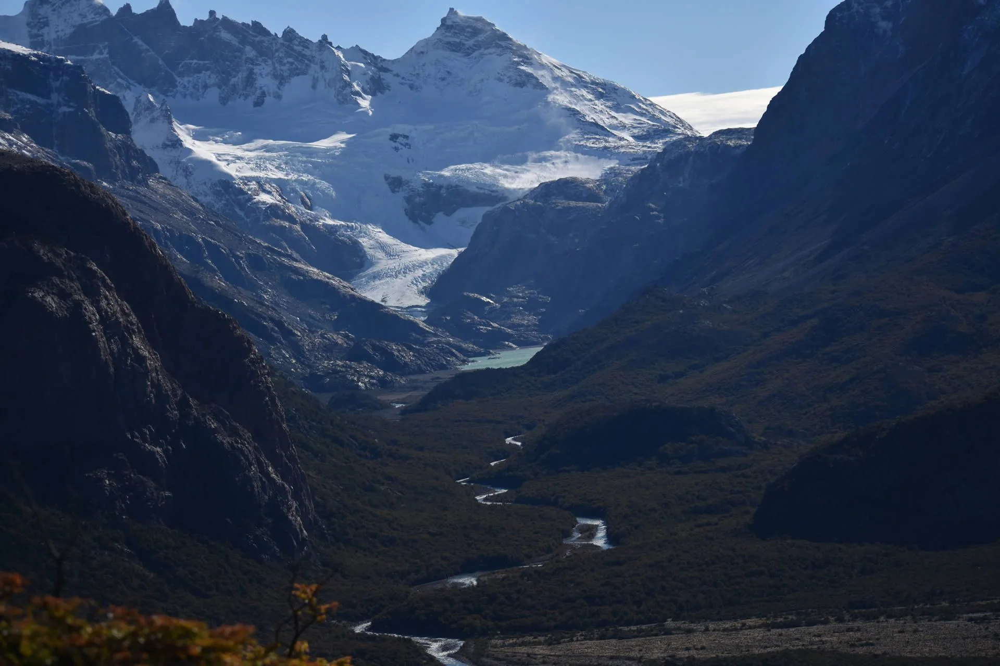
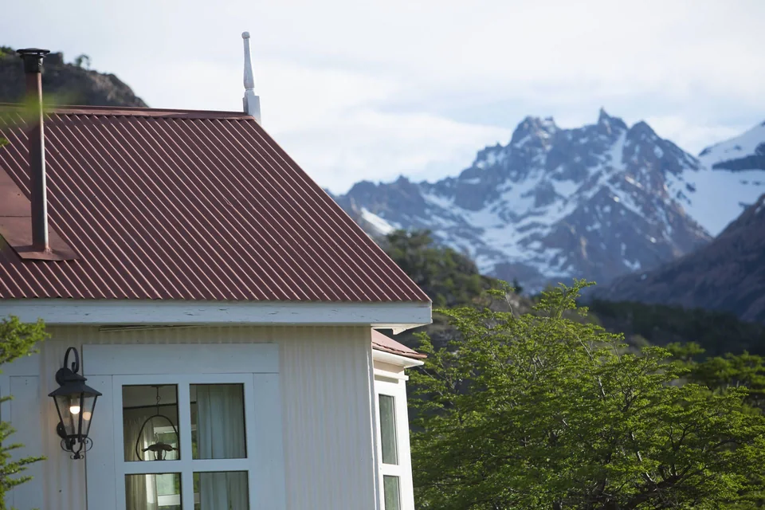

In front of Mount Fitz Roy
Owned & run by mountain lovers



Our story
This place amazed me since my first visit to the area, in the summer of 1987, when I felt that I had found “my place”. After that trip there were others. There were other mountains and other friends. Until I finally decided with my mate on some adventures to follow the path of those first dreams and settle down in El Chaltén.
The Patagonia received me, it gave me its time, its storms and on the slopes of the Fitz Roy it gave me El Pilar, where I was able to combine my greatest passions: mountains and countryside.
I chose its name as a tribute to what I consider was the purest climbing of these mountains. In 1979 Renato Casarotto climbed alone the northern slope of the Fitz Roy tracing one of the most beautiful and most difficult routes known today as Pilar Casarotto or Pilar Norte.
Since it was built, in 1994, El Pilar receives visitors from all around the world who are tempted by the possibility of living the Patagonia in a different way. For everyone, our doors are open. We all are readily willing to guide our guests during their stay so that everyone may live, in their own way, the energy of Nature.
We hope you may all feel the magic of this place as we do.
Carolina Codo
Our country home
Pioneer in De las Vueltas River valley and surrounded by a thick forest of native trees we offer a Patagonian country house recreation, similar to first ones in the area.

A warm and cozy atmosphere, with creaking wood may be heard burning in the great main chimney.
Our country home has only 10 rooms very comfortable with private bathroom and they are warmly set.
It is important to know that in the hostel and surroundings we do not have Wi-Fi, TV or cell phone signal. Far from being an inconvenience, it represents an opportunity to connect with other activities and specially with nature.
9.6 out of 10 from 102 verified reviews · Kayak, November 2026
Activities

Laguna de Los Tres
Leaving the country house you follow a path bordering the Río Blanco. It is a solitary path which allows you to have a better perception of the different sounds of nature. This is the closest view of the Fitz Roy granite wall and its peripheral needles.
You may return to the country house on the same path or descend towards El Chaltén passing through Capri lagoon.

Piedras Blancas Glacier
If you wish to approach the iceberg and its lagoon you should continue on the same path until the Camping Site Poincenot and from there cross the Río Blanco to access the area of the iceberg.

Piedra del Fraile
Progressively the arid slopes lead to the typical Patagonian forest of the area where the Nothofagus (Lengas, Ñires and Coihues) are predominant. During the trip you will have magnificent views of Andes Mountains, views of the different granite peaks which characterize the area and a view of Marconi Pass, doorway to Continental Ice fields.
Del Desierto Lake & Huemul Glacier
Leaving El Pilar by car or bus, travelling north, always bordering the De las Vueltas river.
The path enters the forest. Huemul glacier is an iceberg which lies in Huemul lagoon, a lagoon of dark blue waters typical of the icebergs area.
Madsen Museum
Andreas Madsen, who was a countryside worker of Danish origin, arrived in Buenos Aires in 1901. He became a member of the Limits Commission with Chile and cooperated with the Perito Moreno.
At present, it is possible to visit the cottage where he lived by crossing De las Vueltas river by cable carriage.
Other activities in the area
- Mountain bike
- Estancia Los Huemules Natural Reserve
- Expedition to Continental ice fields (3 to 10 days staying overnight at a camping)
- Mountain activities: zipline, rappel, etc.
- Kayaking (for experts)
- Bird watching / Contemplation of nature
- Sailing on Viedma Lake
All activities offered by local operators.
Location
Hostería El Pilar is located in De las Vueltas river valley, 17 km away from El Chaltén (Province of Santa Cruz) where Eléctrico river flows into De las Vueltas river. It is a privileged place since it is far from the most frequently visited attractions of the area and a starting point for many paths. It possesses a very special magic since it is surrounded by the Andean-Patagonian forest.
View on Google Maps
How to arrive
Airplane
The nearest airport is located in the city of El Calafate (237 km from El Chaltén). The approximated flying time from Buenos Aires is 3 hours; from Bariloche, 1:30 hours and from Ushuaia, 1:10 hours.
Bus
Once you arrive at El Calafate there are regular buses to El Chaltén which have at least two services a day. The approximate travel time is 3 hours.
Car
You may also get there by car, leaving from El Calafate, taking provincial Route 11, and then taking the legendary Route 40, travelling north. After 107 km you arrive at the bridge crossing the Río La Leona (we recommend you to stop for a view of the antique place). A little more to the north, once you have bordered the east side of Viedma Lake, turn west taking provincial Route 23 which takes you to El Chaltén.
Once you arrive at El Chaltén, leaving the town by taking San Martín avenue, you must follow a rocky path which ends at Del Desierto Lake bordering the De las Vueltas river. The path enters the mountain and you may quickly appreciate the transition of the landscape into vegetation and forest. It is possible to find foxes, hares, skunks and many species of birds. The entrance to the property of El Pilar country house is on kilometer 17.
Image gallery
Pictures of the country house
Contact
Contact us
Ruta Provincial 41, km 17, (9301) El Chaltén,Province of Santa Cruz +54 2966 15 460 706 info@hosteriaelpilar.com.ar
Rates & Policies
Contact us directly for promotions and availability at info@hosteriaelpilar.com.ar
Online reservations- Opening November 1st – Closing March 31st.
- Check in: from 3 pm.
- Check out: until 10 am.
- Smoking is not allowed.
- Pets are not allowed.